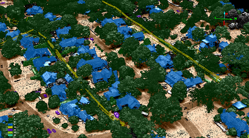
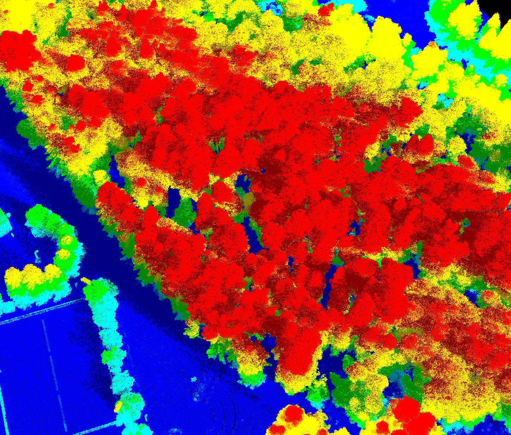

Much of what the industry “knows” comes from early commercial systems that came up short. Our next generation systems are field-proven in military deployments and change what’s possible in airborne mapping.

The difference starts at the level of a single photon — and ripples all the way out to cost.
Conventional linear-mode lidar measures the intensity of a returning laser pulse, which requires thousands of photons to register a confident return. That photon budget forces you to fly low and slow to collect enough signal.
3DEO’s Geiger-mode detectors are single-photon sensitive: each pixel in the array fires when it detects just a few returning photons. Because so little light is needed, the same laser energy can be spread across a much wider area from much higher altitude — while still resolving fine detail.
Individual photon detections include real returns and noise. 3DEO’s processing aggregates millions of detections per second and statistically separates signal from noise, producing a clean, dense, validated point cloud.
Operate from 30,000+ feet — clear terrain and airspace, and image a wide strip in a single line.
Cover thousands of square kilometers per day; less flight time means lower cost per area.
Roughly 1-foot resolution with ~5 cm typical vertical precision, even from altitude.
30–100+ points per square meter where the application calls for it.

If you care about the accuracy of your data, the speed of collection, or doing something impactful with it afterward, the economics favor Geiger-mode decisively.
We publish our work. These papers cover resolution, precision, and real-world performance of Geiger-mode systems.
How single-photon systems achieve fine resolution and centimeter-scale precision.
Resources →WHITE PAPERSeeing the ground beneath dense canopy with multi-angle capture.
Resources →WHITE PAPERThe scanning method behind multi-viewpoint, low-shadow data.
Agile scanning →Book a call to talk through your environment, or request representative point clouds for review.